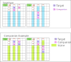
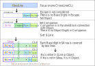

ウェブサイトとGNPX開発は並行して進めているため、両者に不整合なことがあります。最新の情報は、GNPX ソースコードです。
本HPの内容には 誤りが含まれる可能性がありますので（蓋然性は高い）、批判的に見てください。
(Standatd) Exocet
ここでは、Standard Exocetの仕組みを解説します。一部再掲です。
Exocetは、Base、Target、CrossLine、Coverline、Companion などの様々な要素と制約を組み合わせた解法アルゴリズムです。
Exocet の形、用語などに不案内のかたは、 Junior Exocet を参考にしてください。
Junior Exocet を参考にしてください。
(0) ExocetのLocked
Exocetは Locked によるアルゴリズムです。
- 1) Baseには3つ以上の Base候補数字がある。
- 2) BaseとTarget, Companion から決まるS領域には、Base数字の配置に制約がある。
- 3) Base候補数字から どのような2つ組の候補数字を選んでも、そのBase数字はTargetにある" 。

以下では、Exocet の仕組み = 論理を解説します。
(1) Exocetの枠組み
最初に、Baseと方向(direction) を設定します。
- 枠組み :
- 1) 3つのCrossLine(CL) を選びます。
CL-0は1つに定まります。CL-1、CL-2はそれぞれ3つの候補があり、各1つのCLを選びます。 - 2）Escapeは、stem、方向、CL-1、CL-2から定まります。
- 3) stemは、形を定めるためのもので、Exocet の論理には関係しません。
(2) Exocetの要素
Exocetの要素を組み立てる手順を示します。これにより、各要素の機能と関係が生じます。
- Target :
- 1) CrossLine(CL)上のEscape以外の箇所に Targetを配置します。
Targetは、Base数字を含む必要があります。 - Companion :
- 1) Companion は、CL上の Target,Escape以外の箇所で 次の図のように定義します。
- 2) Companionは、Target毎に定義し、それらを合成して局面のCompanionとします。
- SLine :
- 1) SLineは、CLからEscape,Target,Companionを除いた 残りの領域 です。
- 2) Base数字は SLineとTargetにあり、EscapeとCompanionにはありません。
SLineに Base数字がないなら、Target にあります。


(3) SLine - Target リンク ... Companion の役割
Exocetでは、Companion は重要な役割を果たしています。
Companionは、最低限に必要なセルを含めば ある程度"任意"に設定できます。
Exocetが成立する最小=最適 に設定すのが良いでしょう。
- CrossLine には 候補数字 #a のインスタンスが1つある。
- CrossLine を Sline, Companion,Target,Escape に分ける。
- Escape には #a はない。Sline, Companion,Target #a のインスタンスがある。
- Target の他の CrossLine への投影箇所もCompanion とする。
- 条件:Companion には #a はない を加えると、Sline と Target はリンクになる( #a はどちらかにある)。
- (何らかのロジックで) "SAreaに #a がない" ことが導かれると、#a は Target にある。

(4) Exocet の数字の条件
次の R1-R4 を満たすと Exocet が成立し、Base数字は Target-Target で肯定になります。
| R1 | Baseセル(B1,B2)は、いずれも未確定セルであり、合わせて 3～4 種の Base 数字をもつ。 |
| R2 | Targetセル（T1,T2）は、いずれも未確定セルであり、合わせてBase数字を3つ以上もつ。 |
| R3 | Companionセルは、Base 数字を含まない。 |
| R4 | Base数字の全てについて、S領域{S0,S1,S2}にある Base数字は、2つの Cover-Line でカバーされる。 |
これらの条件について、若干、補足して解説します。
補足:
| R1’ | Baseセルの Base数字 が 2つの場合は LockedSet です。5以上のケースは、"制約が多くなり、おそらくないであろう"という予測によります。
これより、R1は"3～4の Base数字"となっています。おそらく、拡張します。 2つのベースセルに共通の数字がないこともあります。 |
| R2’ | TargetはBase数字以外の候補数字を含むことも可能です。 |
| R3’ | Companionセルは、確定セルと未確定セルの場合がある。 |
| R4’ | S領域{S0,S1,S2}にある Base数字は、候補数字、確定数字のいずれもあります。 |
(5) Exocet の論理 ... Lockedの証明
R1～R4を満たすBase数字は、Locked です。
Base候補数字から任意の2数字を選択したとき、この2数字について次の命題が成り立ちます。
命題 : Baseで positive なら、Object1 と Object2 でも positive である。
| L1 | Baseセルで、ベース数字#ab は positive とする。 |
| L2 | 3つのCrossLine(CrossLine-0,CrossLine-1,CrossLine-2)には、#abのインスタンスがそれぞれ
3つあり(数独のルール)、 合わせて6個のインスタンスがある。 |
| L3 | R3より、Companionには #ab のインスタンスはない。 |
| L4 | R4より、S領域{SLine-0,SLine-1,SLine-2} には 2つの #a CoverLine、2つの#b CoverLine がある。 |
| L5 | "6-4=2"より、#aと#b インスタンスは、それぞれ Object1 と Object2にある。 (一方のObjectに #aと#b が同時に入ることはない。どちらにどれかは確定しない。) |
また、命題の対偶は次の通りです。
対偶：Targetの候補数字が Baseを完全に被覆しないなら、Exocet は成立しない。
(6) Exocet Locked の理解(再掲)
ここで、改めて Exocet Locked の状態を考えます。
Exocet Locked は、Baseの候補数字から どの2つの候補数字を選んだ としても、それらは Target で肯定となります。
対象とするPuzzleには解があり、かつ唯一解のPuzzleです。その解から翻れば いずれかの2つのBase候補数字(#a,#b)は確定数字(#A,#B)です。
Base候補数字は3つ以上あるので、残り"#x"に着目すると、候補数字#Xは Target で否定であり、Escapeで肯定です。
ただし、Puzzleを解く途中段階では、Base候補数字のどれが解であるかは分かっていません。
Exocet Lockedは、確定していない が それでも導けることがある 推論です。
同様のこと(推論)は、例えば LockedSet を思い浮かべると良いでしょう。

(7) Mirror Logic(再掲)
Mirror は、Exocet Logic が成立したときに生じる論理です。
1) JE2で Exocet Lockedが成立している、とする。
2) Targetが #a なら、Mirrorの一方のセルには 同じ#a がある。
3) 対偶 :
MIrrorにないBase候補数字は、対応するTargetにない。
Base・Target・Mirrorは同じBand内にあり、スコープが重ならない位置にあります。
このことから、Mirrorを用いる除外 が成立します。
一方、JE2 以外で Band制約とスコープの重なり条件が成立しないケースでは、Mirrorの論理は成り立ちません。

Exocetの拡張
(1) Exocet Single
JExocet (JE1)  SingleBase サンプル
SingleBase サンプル 
Single Exocetは、一方のObject が "Base数字を持てない" = "確定済みのセル群" のケースです。
Baseセル、Base数字、CrossLineの設定は、標準のExocetと同じです。
次の図は一例です。一方のObjectが確定済みセルであり、そのときのSLineとCompanionの形です。
ObjectとCompanionの設定方法は、標準的なExocetと同じです。

- Single Exocetの成立条件
- 1) Base数字うち、1つの候補数字は S領域に3つのCoverLine をもつ（これを"wildcard"とよぶ）。
- 2) wildcard以外のBase数字(#a)について、S領域にある全ての#aは2つのCoverLineで被覆できる。
- 3) 通常のObjectには、wildcardを含め全てのBase数字が候補としてある（その他の数字も含んでよい)。
- Single Exocetの結果
- 1) Baseでは、wildcard は positiveである。
- 2) 通常のObjectでは、wildcard は positiveである。
- 3) Baseと通常のObjectの両方と連結するセルでは、wildcardは negativeである。
(2) Exocet Single-Base
Exocet サンプル 
Exocet Single-Base は、Exocet Single の Base が 1セル の ケースです。
Exocet Single-Base の特徴として、極めて多くのPuzzleに適用できるアルゴリズムです。